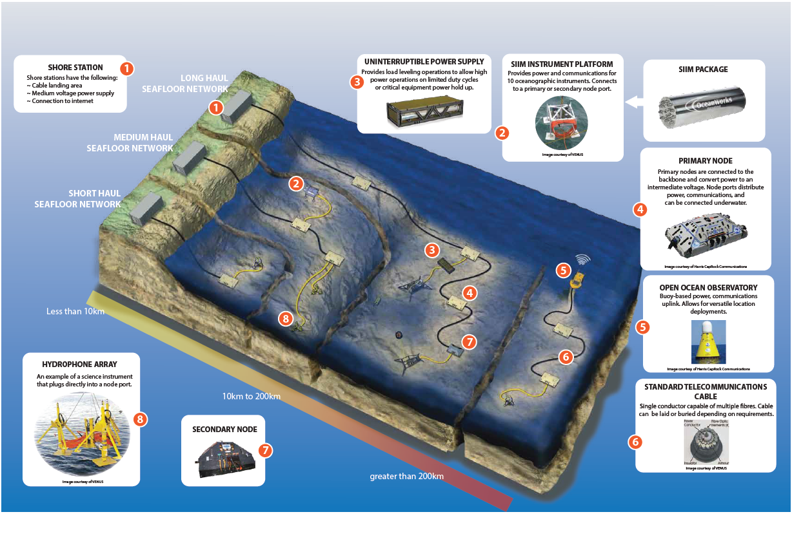

Cabled Ocean Observatories

These seafloor network systems provide a versatile platform for the continuous monitoring, observing and recording of various seafloor activities. The networks are cabled systems typically using trans-ocean, deep sea power/fibre optic telecommunications cables and installation technology.
Nodes, acting as branches and connection points, are incorporated into the cable system at intervals to allow for ROV connection of a variety of sensors and instruments. Data is fed back to a central data processing and control center with 24/7/365 data gathering and recording capability. This data feedback is typically to a shore station, but may also be sent to a data buoy and satellite connection. The instruments can be connected and disconnected at any one of multiple nodes by an ROV. Critical node elements can be recovered to the surface by an ROV working from a small vessel for repair, maintenance and upgrade without interrupting other nodes.
The selection of instrumentation is virtually unlimited with power and control connections made through the use of OceanWorks Subsea Instrument Interface Modules (SIIM) and power modules.
The network elements can be configured to meet specific customer requirements. (Node Datasheet)
The classes of ocean observatories are presented as follows:
Near-Shore Cabled Observatory
This type of observatory typically includes one or two nodes or SIIMs located on a linear cable, close to a shore station (less than 10 km) in relatively shallow water (less than 200 m). The nodes, cables and instruments can often be deployed from a small vessel. Telecommunications or custom light cable options are also available. Near-Shore Cabled Observatories support 10 to 50 instruments located in an area close to the node(s).
Coastal Cabled Observatory

This is typically a medium sized observatory consisting of several nodes spread over a larger area of scientific interest. Cable length is generally in the order of 10 to 200 km from a shore station and can be found in any water depth. Linear, branching or ring topologies can be used for the cable layout. Connections are made to multiple nodes, providing efficient coverage of the study area. Instruments can be deployed around each primary node site 10 km away with the use of secondary nodes.
Regional Cabled Observatory
This large scale observatory consists of multiple nodes spread over a wide area of scientific interest, with total cable lengths ranging from 200 to over 1000 km and water depths more than 3000 m. Linear, branch or ring cable topologies can be used to provide efficient coverage of the study area. Instruments can be deployed around each primary node site at multiple locations up to 10 km away with the use of secondary nodes.
Buoyed Observatory
The buoyed observatory consists of one or more nodes spread over an area of interest, generally on a linear cable system deployed a great distance from shore, in a variety of water depths. These are similar in construction to either a near shore, coastal or regional observatory, but with a connection to an open ocean, moored buoy serving as the platform for power and satellite data and control communications in place of a more traditional shore station. For large observatories, multiple buoys may be used to provide power and fault tolerance.
Detailed Site Monitoring Observatory
Applications for detailed site monitoring can range from pre-development environmental data gathering and assessment studies to wind, wave and water current powered equipment and environmental impact monitoring and control.
The autonomous Detailed Site Monitoring Observatory is a variation of the buoyed autonomous observatory. It is a highly capable system that can be deployed at an area of interest to sample high resolution and high bandwidth data for a defined period of time. Extremely accurate clocks enable time keeping within +/- 1ms per month and battery packs based on systems developed by OceanWorks for the US Navy and MWCC can supply several hundred watts of power for the deployment duration. Data is archived on the seafloor in large, highly reliable solid state storage modules with a capacity of several terra bytes.
The centralized data collection node is supplemented by cabled near-field instrument pods that can be deployed within a radius of 500 m from the main node. All data is time stamped and stored in a database format to facilitate post processing and cross correlation of events.
Real time access to instrument data is available via an under water mating electro-fibre optic connector, allowing an ROV to establish a temporary surface connection. Access to archived data is also supported.
These systems are customized by OceanWorks to meet specific customer requirements.
Technical Summary
Ocean Observatory Types & Details:
|
|
Distance from Shore |
Hardware |
Instruments |
Data Bandwidth |
Power at Secondary Node |
Backbone Voltage |
|
Near-Shore Cabled Observatory |
0-10 km |
Single secondary node and optional SIIMs |
10-50 |
1GBit/s |
<3kW |
<400VD |
|
Coastal Cabled Observatory |
10-200 km |
Multiple primary nodes, secondary nodes and SIIMs |
Up to 150 per primary node location |
1GBit/s |
3kW |
<2kVDC |
|
Regional Cabled Observatory |
>200 km |
Multiple primary nodes, secondary nodes and SIIMs |
Up to 150 per primary node location |
10GBit/s |
>3kW |
>2kVDC |
|
Buoyed Observatory |
N/A |
Multiple primary nodes, secondary nodes and SIIMs |
Up to 80 per primary node location |
1-10GBit/s subsea and up to 6Mbit/s by satellite |
Various |
>2kVDC: depend on subsea step out distance |
|
Detailed Site Monitoring Observatory |
|
Multiple primary nodes, secondary nodes and SIIMs. Subsea data logging and ROV interface |
Cabled, near-fitted instrument pods. Can be deployed within a radius of 500 m |
|
|
|